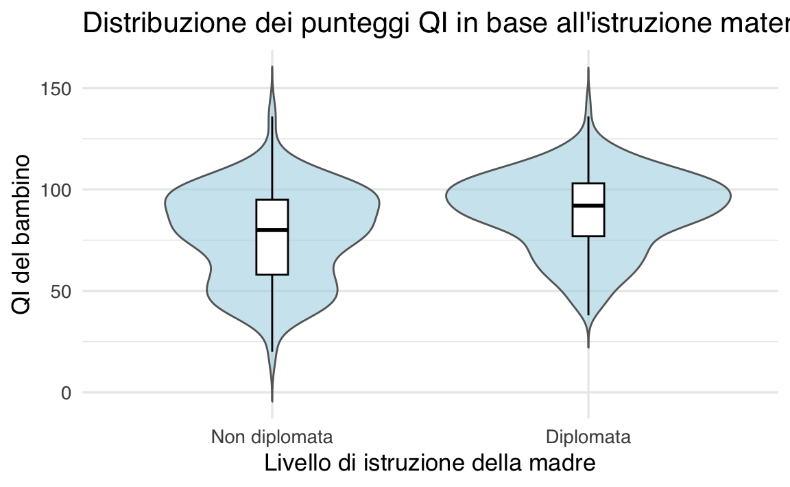
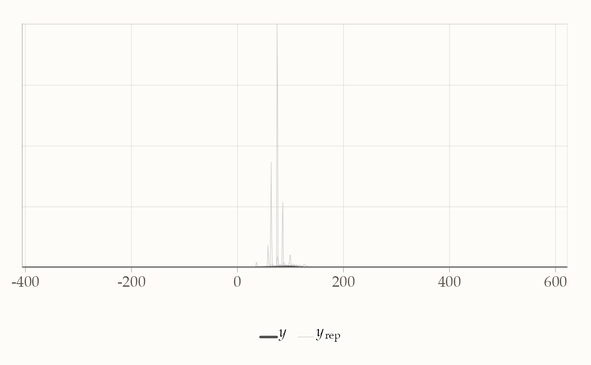
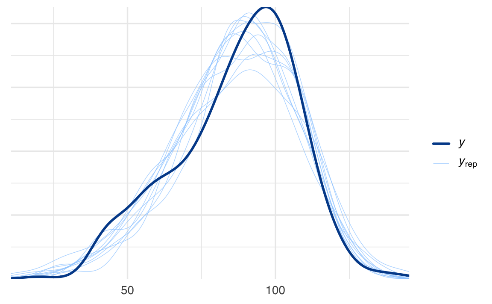
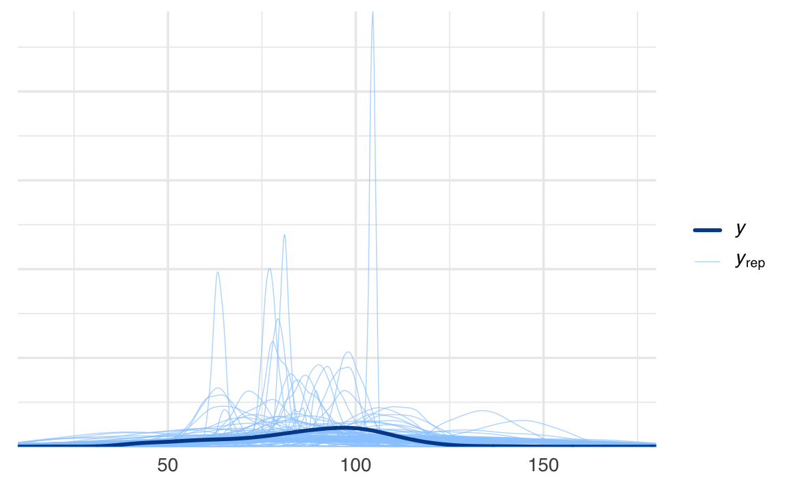

here::here("code", "_common.R") |>
source()
# Load packages
if (!requireNamespace("pacman")) install.packages("pacman")
pacman::p_load(cmdstanr, posterior, brms, bayestestR, insight)58 Confronto tra le medie di due gruppi
In questo capitolo imparerai a
- condurre un confronto bayesiano tra le medie di due gruppi utilizzando la funzione
brm()del pacchetto brms.
Prerequisiti
- Consultare l’articolo “Bayesian estimation supersedes the t test” (Kruschke, 2013).
Preparazione del Notebook
58.1 Introduzione
Spesso, ci troviamo ad affrontare la necessità di confrontare due gruppi di dati. Potrebbe interessarci sapere se la media di un gruppo è maggiore o diversa rispetto a quella di un altro gruppo. Per effettuare tale confronto, è fondamentale utilizzare un modello statistico, poiché le vere differenze tra i gruppi sono spesso accompagnate da rumore di misurazione o fluttuazioni casuali del fenomeno in esame. Questo rende difficile trarre conclusioni basandosi unicamente sulle differenze calcolate dai dati osservati.
Il metodo tradizionale per confrontare statisticamente due o più gruppi è quello di utilizzare un test di ipotesi statistico. Questo approccio prevede l’individuazione di un’ipotesi nulla, che solitamente afferma che non ci sono differenze tra i gruppi, e l’utilizzo di una statistica test per determinare se i dati osservati sono plausibili sotto questa ipotesi. L’ipotesi nulla viene rifiutata quando la statistica test calcolata supera una soglia predefinita.
Tuttavia, i test di ipotesi possono essere complessi e i risultati spesso soggetti a interpretazioni errate. La scelta delle specifiche del test statistico (ad esempio, quale test utilizzare, quale ipotesi nulla testare, quale livello di significatività adottare) è spesso arbitraria e basata su convenzioni piuttosto che sulla specificità del problema o delle decisioni da prendere (Johnson, 1999). Inoltre, i risultati forniti dai test sono spesso indiretti, incompleti e tendono a sovrastimare le evidenze contro l’ipotesi nulla (Goodman, 1999).
Un approccio più informativo ed efficace per il confronto tra gruppi è quello basato sulla stima invece che sul test dell’ipotesi nulla, ed è guidato dalla probabilità bayesiana anziché dalla frequentista. In pratica, invece di testare se ci sono differenze tra i gruppi, si cerca di ottenere una stima di quanto siano effettivamente diversi. Questo approccio è intrinsecamente più informativo. Inoltre, viene inclusa una stima dell’incertezza associata a tale differenza, che tiene conto sia dell’incertezza dovuta alla nostra mancanza di conoscenza dei parametri del modello (incertezza epistemica) sia dell’incertezza causata dalla variabilità intrinseca del sistema (incertezza aleatoria).
Per affrontare tale problema possiamo usare un modello di regressione. In questo caso, anziché calcolare direttamente la differenza tra le medie, si introduce una variabile indicatrice (o “dummy”) \(D\) nel modello di regressione, come segue:
\[ y_i = \alpha + \gamma D_i + \varepsilon_i. \]
La variabile indicatrice \(D\) specifica l’appartenenza ai gruppi attraverso valori binari: 0 per il gruppo di riferimento e 1 per il gruppo di confronto, definita come:
\[ D_i = \begin{cases} 0 & \text{se l'osservazione } i \text{ appartiene al gruppo 0,} \\ 1 & \text{se l'osservazione } i \text{ appartiene al gruppo 1.} \end{cases} \]
Entrambi i metodi sono appropriati per studiare la differenza tra le medie di due gruppi indipendenti. Tuttavia, il modello di regressione offre maggiore flessibilità e possibilità di estensione. Questa metodologia consente di includere ulteriori variabili esplicative, migliorando la comprensione dei fattori che influenzano l’esito di interesse. Tale flessibilità diventa particolarmente utile per esplorare come altre variabili incidano sulla differenza tra le medie o per analizzare contemporaneamente più variabili.
58.2 Regressione bayesiana per due gruppi indipendenti
In un approccio bayesiano, il modello di regressione può essere espresso come:
\[ \begin{align*} y_i & \sim \mathcal{N}(\mu_i, \sigma), \\ \mu_i & = \alpha + \gamma D_i. \end{align*} \]
In questo modello:
- \(\alpha\) rappresenta l’intercetta, corrispondente alla media del gruppo con \(D = 0\) (gruppo di riferimento),
- \(\gamma\) quantifica la differenza attesa tra le medie dei due gruppi,
- \(\sigma\) rappresenta la deviazione standard associata agli errori casuali.
Per il gruppo di riferimento (\(D = 0\)), il modello si riduce a:
\[ \begin{align*} y_i & \sim \mathcal{N}(\mu_i, \sigma), \\ \mu_i & = \alpha. \end{align*} \]
In questo caso, \(\alpha\) rappresenta direttamente la media del gruppo 0.
Per il gruppo di confronto (\(D = 1\)), il modello diventa:
\[ \begin{align*} y_i & \sim \mathcal{N}(\mu_i, \sigma), \\ \mu_i & = \alpha + \gamma. \end{align*} \]
Qui, \(\alpha + \gamma\) rappresenta la media del gruppo 1, mentre \(\gamma\) riflette la differenza tra la media del gruppo 1 e quella del gruppo 0.
Di conseguenza, l’analisi della differenza tra le medie dei due gruppi si traduce nell’inferenza sul parametro \(\gamma\). In un contesto bayesiano, ciò comporta l’esame della distribuzione a posteriori di \(\gamma\), che consente di effettuare confronti diretti e di valutare l’incertezza associata alla stima di tale differenza.
58.3 Approccio Frequentista
L’inferenza frequentista si basa sulla costruzione della distribuzione campionaria di una statistica di interesse. Nel caso presente, la statistica di interesse è la differenza tra le medie di due gruppi indipendenti. Supponiamo che i dati provengano da due popolazioni distribuite normalmente:
\[ Y_1 \sim \mathcal{N}(\mu_1, \sigma_1) \quad \text{e} \quad Y_2 \sim \mathcal{N}(\mu_2, \sigma_2), \]
dove \(\mu_1\) e \(\mu_2\) sono le medie delle popolazioni, e \(\sigma_1\) e \(\sigma_2\) sono le deviazioni standard. Assumiamo inoltre che le varianze delle due popolazioni siano uguali, ovvero \(\sigma_1 = \sigma_2 = \sigma\).
58.3.1 Inferenza sulla differenza delle medie
Siamo interessati a fare inferenza sulla differenza \(\mu_1 - \mu_2\). La statistica campionaria corrispondente è la differenza tra le medie campionarie:
\[ \bar{Y}_1 - \bar{Y}_2. \]
Per fare inferenza, dobbiamo determinare la distribuzione di \(\bar{Y}_1 - \bar{Y}_2\) nell’universo dei campioni.
58.3.1.1 Valore atteso
Il valore atteso della differenza tra le medie campionarie è:
\[ E(\bar{Y}_1 - \bar{Y}_2) = E(\bar{Y}_1) - E(\bar{Y}_2) = \mu_1 - \mu_2. \]
58.3.1.2 Varianza
La varianza della differenza tra le medie campionarie dipende dall’indipendenza dei due campioni. Se \(\bar{Y}_1\) e \(\bar{Y}_2\) sono indipendenti, la covarianza tra di essi è zero, e la varianza è data da:
\[ \begin{align} V(\bar{Y}_1 - \bar{Y}_2) &= V(\bar{Y}_1) + V(\bar{Y}_2) - 2 \text{Cov}(\bar{Y}_1, \bar{Y}_2) \\ &= V(\bar{Y}_1) + V(\bar{Y}_2) \quad \text{(poiché $\text{Cov}(\bar{Y}_1, \bar{Y}_2) = 0$)} \\ &= \frac{\sigma_1^2}{n_1} + \frac{\sigma_2^2}{n_2}, \end{align} \]
dove:
- \(\sigma_1^2\) e \(\sigma_2^2\) sono le varianze delle popolazioni da cui sono estratti i campioni,
- \(n_1\) e \(n_2\) sono le dimensioni dei campioni \(\bar{Y}_1\) e \(\bar{Y}_2\).
Se invece \(\bar{Y}_1\) e \(\bar{Y}_2\) non sono indipendenti, la covarianza \(\text{Cov}(\bar{Y}_1, \bar{Y}_2)\) deve essere inclusa nel calcolo:
\[ V(\bar{Y}_1 - \bar{Y}_2) = \frac{\sigma_1^2}{n_1} + \frac{\sigma_2^2}{n_2} - 2 \text{Cov}(\bar{Y}_1, \bar{Y}_2). \]
Tuttavia, in generale, la covarianza non è nota, e l’inferenza frequentista si applica principalmente al caso in cui i due campioni sono indipendenti, ovvero \(\text{Cov}(\bar{Y}_1, \bar{Y}_2) = 0\).
58.3.2 Distribuzione della statistica
Per due campioni indipendenti provenienti da popolazioni normali, la statistica \(\bar{Y}_1 - \bar{Y}_2\) segue una distribuzione normale:
\[ \bar{Y}_1 - \bar{Y}_2 \sim \mathcal{N}\left(\mu_1 - \mu_2, \sqrt{\frac{\sigma_1^2}{n_1} + \frac{\sigma_2^2}{n_2}}\right). \]
Nel caso in cui \(\sigma_1 = \sigma_2 = \sigma\), è possibile stimare la varianza comune \(\sigma^2\) utilizzando una varianza pooled:
\[ s_p^2 = \frac{(n_1 - 1)s_1^2 + (n_2 - 1)s_2^2}{n_1 + n_2 - 2}, \]
dove \(s_1^2\) e \(s_2^2\) sono le varianze campionarie dei due gruppi, calcolate come:
\[ s_1^2 = \frac{1}{n_1 - 1} \sum_{i=1}^{n_1} (y_{1,i} - \bar{y}_1)^2 \quad \text{e} \quad s_2^2 = \frac{1}{n_2 - 1} \sum_{i=1}^{n_2} (y_{2,i} - \bar{y}_2)^2. \]
In sintesi, per due campioni indipendenti provenienti da popolazioni normali con varianze uguali, la differenza delle medie campionarie \(\bar{Y}_1 - \bar{Y}_2\) segue una distribuzione normale con:
- Valore atteso: \(\mu_1 - \mu_2\),
- Varianza: \(\frac{\sigma^2}{n_1} + \frac{\sigma^2}{n_2}\), stimabile tramite la varianza pooled \(s_p^2\).
Questo risultato è fondamentale per costruire test di ipotesi e intervalli di confidenza sulla differenza delle medie. Questi argomenti verranno approfonditi in seguito. Per ora, limitiamoci a costruire la distribuzione campionaria della statistica \(\bar{Y}_1 - \bar{Y}_2\) e a calcolare delle probabilità.
58.4 Un esempio illustrativo
Consideriamo il dataset relativo al quoziente di intelligenza (QI) di un campione di bambini, distinguendo tra quelli le cui madri hanno completato la scuola superiore e quelli le cui madri non l’hanno completata. Vediamo come implementare l’analisi descritta sopra passo per passo.
58.4.1 Esplorazione iniziale dei dati
Carichiamo i dati e osserviamo una sintesi delle prime righe per capire la struttura del dataset:
Successivamente, analizziamo la distribuzione dei bambini nei due gruppi, in base all’educazione delle madri:
I risultati mostrano che:
- 93 bambini hanno madri che non hanno completato la scuola superiore.
- 341 bambini hanno madri diplomate,
con le medie e deviazioni standard del QI riportate sopra.
La differenza tra le medie del QI dei due gruppi può essere calcolata direttamente come:
Questa analisi preliminare evidenzia la differenza media tra i gruppi.
Per comprendere meglio la distribuzione dei dati, utilizziamo un violin plot, che mostra la densità stimata dei punteggi del QI nei due gruppi:
ggplot(kidiq, aes(x = as.factor(mom_hs), y = kid_score)) +
geom_violin(trim = FALSE) +
labs(
x = "Livello di istruzione della madre",
y = "QI del bambino",
title = "Distribuzione dei punteggi QI in base all'istruzione materna"
) +
scale_x_discrete(labels = c("0" = "Non diplomata", "1" = "Diplomata"))
58.5 Parallelo tra approccio frequentista e bayesiano nel confronto tra due medie
Il confronto tra le medie di due gruppi indipendenti può essere affrontato sia con un approccio frequentista, basato sulla distribuzione campionaria, sia con un approccio bayesiano, basato sull’aggiornamento delle credenze a posteriori. Vediamo i due approcci in dettaglio.
58.5.1 Approccio Frequentista
L’inferenza frequentista si basa sulla distribuzione campionaria della differenza tra le medie dei due gruppi. Supponiamo che i dati provengano da due popolazioni distribuite normalmente:
\[ Y_1 \sim \mathcal{N}(\mu_1, \sigma_1) \quad \text{e} \quad Y_2 \sim \mathcal{N}(\mu_2, \sigma_2), \]
dove \(\mu_1\) e \(\mu_2\) sono le medie delle popolazioni, e \(\sigma_1\) e \(\sigma_2\) sono le deviazioni standard.
Siamo interessati alla differenza delle medie campionarie, \(\bar{Y}_1 - \bar{Y}_2\), che ha una distribuzione normale:
\[ \bar{Y}_1 - \bar{Y}_2 \sim \mathcal{N}\left(\mu_1 - \mu_2, \sqrt{\frac{\sigma_1^2}{n_1} + \frac{\sigma_2^2}{n_2}}\right). \]
Se le varianze delle due popolazioni sono uguali (\(\sigma_1 = \sigma_2 = \sigma\)), possiamo stimare \(\sigma^2\) tramite una varianza poolata:
\[ s_p^2 = \frac{(n_1 - 1)s_1^2 + (n_2 - 1)s_2^2}{n_1 + n_2 - 2}. \]
Con questa stima, possiamo calcolare la probabilità che la differenza osservata tra le medie campionarie superi un certo valore, ad esempio 5 punti.
58.5.1.1 Esempio pratico
Consideriamo i dati:
- Gruppo 1 (madri diplomate): \(n_1 = 341\), \(\bar{Y}_1 = 89.3\), \(s_1 = 19.0\),
- Gruppo 2 (madri non diplomate): \(n_2 = 93\), \(\bar{Y}_2 = 77.5\), \(s_2 = 22.6\).
Calcoliamo la probabilità che la differenza campionaria \(\bar{Y}_1 - \bar{Y}_2\) superi 5 punti:
# Dati
mean_1 <- 89.3
std_1 <- 19.0
n_1 <- 341
mean_2 <- 77.5
std_2 <- 22.6
n_2 <- 93
# Varianza poolata
pooled_variance <- (((n_1 - 1) * std_1^2) + ((n_2 - 1) * std_2^2)) / (n_1 + n_2 - 2)
# Deviazione standard della differenza
std_diff <- sqrt(pooled_variance / n_1 + pooled_variance / n_2)
# Probabilità
diff_threshold <- 5
p_value <- 1 - pnorm(diff_threshold, mean = 0, sd = std_diff)
p_value
#> [1] 0.015558.5.2 Approccio Bayesiano
L’approccio bayesiano utilizza un modello di regressione con una variabile indicatrice (dummy) per distinguere i due gruppi. La formula del modello è:
\[ Y = \beta_0 + \beta_1 \cdot \text{mom\_hs} + \epsilon, \]
dove:
- \(\beta_0\) è la media del gruppo di riferimento (madri non diplomate),
- \(\beta_1\) è la differenza tra le medie dei due gruppi,
- \(\epsilon \sim \mathcal{N}(0, \sigma^2)\).
58.5.2.1 Specifica del modello e stima
Utilizziamo il pacchetto brms per stimare il modello, con distribuzioni a priori debolmente informative:
fit_1 <- brm(
kid_score ~ mom_hs,
data = kidiq,
backend = "cmdstanr",
silent = 0
)Dopo aver stimato il modello, possiamo esaminare la distribuzione a posteriori del coefficiente \(\beta_1\), che rappresenta la differenza tra le medie.
58.5.2.2 Probabilità e intervalli di credibilità
Calcoliamo la probabilità che la differenza tra le medie sia maggiore di 5 punti:
# Campioni posteriori del coefficiente mom_hs
posterior_samples <- as_draws_df(fit_1)
mom_hs_coef <- posterior_samples$b_mom_hs
# Probabilità che la differenza sia maggiore di 5
prob_greater_than_5 <- mean(mom_hs_coef > 5)
prob_greater_than_5
#> [1] 0.99858.5.3 Differenze tra i due approcci
I risultati ottenuti con i due approcci possono differire perché calcolano la probabilità sotto assunzioni e modelli differenti. Vediamo nel dettaglio le differenze tra i due approcci per chiarire la discrepanza.
58.5.3.1 Approccio frequentista
- Ipotesi: La differenza tra le medie campionarie \(\bar{Y}_1 - \bar{Y}_2\) è distribuita secondo una normale centrata in \(0\) (sotto l’ipotesi nulla che \(\mu_1 = \mu_2\)).
- Distribuzione utilizzata: La distribuzione normale ha una deviazione standard basata sulla stima poolata della varianza campionaria.
- Risultato: La probabilità calcolata rappresenta quanto è improbabile osservare una differenza di almeno 5 punti sotto l’ipotesi nulla.
Questo approccio parte dall’ipotesi di uguali medie (\(\mu_1 = \mu_2\)) e misura l’evidenza contro questa ipotesi. In sostanza, stiamo testando un’ipotesi frequentista sulla differenza campionaria.
58.5.3.2 Approccio bayesiano
-
Ipotesi: Modello lineare bayesiano che stima il valore del coefficiente \(\beta\) associato a
mom_hs, usando i dati osservati per costruire una distribuzione a posteriori. - Distribuzione utilizzata: La distribuzione a posteriori del coefficiente \(\beta\), che rappresenta la plausibilità dei valori di \(\beta\) dati i dati osservati.
- Risultato: La probabilità calcolata è la proporzione di campioni posteriori in cui \(\beta > 5\).
Questo approccio riflette l’evidenza dei dati osservati rispetto al modello stimato, senza partire dall’ipotesi che \(\mu_1 = \mu_2\).
58.5.3.3 Perché i risultati differiscono?
-
Assunzioni di partenza:
- Frequentista: Parte dall’ipotesi nulla \(\mu_1 = \mu_2\) e calcola quanto è improbabile osservare una differenza di almeno 5 punti sotto questa ipotesi.
- Bayesiano: Parte da una distribuzione a priori per i parametri del modello, aggiornata con i dati osservati per stimare la distribuzione a posteriori. Non assume \(\mu_1 = \mu_2\), ma stima direttamente la probabilità che la differenza sia maggiore di 5.
-
Distribuzione di riferimento:
- Nel metodo frequentista, la distribuzione normale è centrata su \(0\) con varianza stimata.
- Nel metodo bayesiano, la distribuzione è centrata sulla stima massima a posteriori (MAP) del coefficiente \(\beta\), che riflette il valore più plausibile dato i dati.
-
Effetto dei dati osservati:
- Nel metodo frequentista, il valore di \(5\) è confrontato con una distribuzione teorica basata sull’ipotesi nulla.
- Nel metodo bayesiano, il valore di \(5\) è confrontato con una distribuzione basata sui dati osservati.
Quale metodo usare?
Dipende dall’interpretazione desiderata: - se vogliamo testare quanto sono compatibili i dati con l’ipotesi \(\mu_1 = \mu_2\), il metodo frequentista è appropriato; - se vogliamo stimare direttamente la probabilità che la differenza sia maggiore di 5 punti, data la distribuzione a posteriori, il metodo bayesiano è più adatto.
La discrepanza tra i risultati riflette le diverse filosofie statistiche dei due approcci. Tuttavia, se partiamo dal presupposto che l’ipotesi nulla (\(\mu_1 = \mu_2\)) sia sicuramente falsa, come accade quasi sempre nel mondo reale (poiché una differenza, per quanto piccola, è inevitabile), l’approccio frequentista perde di utilità pratica. Testare cosa accadrebbe se la differenza fosse esattamente zero è una costruzione teorica che raramente offre informazioni utili per comprendere i dati osservati.
L’approccio bayesiano, invece, permette di concentrarsi su una domanda più pertinente: qual è il grado di incertezza sulla differenza tra le medie delle due popolazioni? Questo approccio combina i dati osservati con informazioni a priori (esplicite o deboli) per costruire una distribuzione a posteriori che descrive la plausibilità dei possibili valori della differenza. In altre parole, ci consente di stimare direttamente quanto è probabile che la differenza tra le medie superi una soglia significativa (ad esempio, 5 punti), senza fare affidamento su ipotesi non realistiche come quella di una differenza esattamente nulla.
In sintesi, l’approccio bayesiano è più utile in questo contesto perché:
- Non si basa su un’ipotesi nulla idealizzata che sappiamo non essere vera.
- Stima direttamente la nostra incertezza rispetto alla differenza tra le medie, fornendo una risposta concreta e interpretabile in termini di probabilità.
- Permette di integrare le evidenze dei dati con la conoscenza preesistente, per ottenere inferenze più realistiche e informate.
Pertanto, l’approccio bayesiano è particolarmente adatto quando l’obiettivo è comprendere e quantificare l’incertezza riguardo alla differenza tra gruppi, piuttosto che testare una condizione ipotetica che difficilmente riflette la realtà.
58.5.4 Intervallo di credibilità
Sviluppiamo l’analisi bayesiana. Calcoliamo anche l’intervallo di credibilità per \(\beta_1\):
bayestestR::hdi(fit_1, parameters = "mom_hs", ci = 0.89)
#> Highest Density Interval
#>
#> Parameter | 89% HDI
#> -------------------------
#> mom_hs | [8.36, 15.66]58.5.5 Distribuzione Predittiva a Posteriori
Effettuiamo un controllo grafico per confrontare i dati osservati con quelli predetti dal modello:
pp_check(fit_1)
58.5.6 R² bayesiano
Infine, calcoliamo il coefficiente di determinazione (Bayesiano \(R^2\)) per valutare la capacità del modello di spiegare la variabilità nei dati:
bayes_R2(fit_1)
#> Estimate Est.Error Q2.5 Q97.5
#> R2 0.0577 0.0206 0.0218 0.101Questo esempio dimostra come l’analisi di regressione bayesiana consenta di replicare e approfondire i risultati ottenuti in precedenza. Il modello non solo stima la differenza tra i gruppi, ma offre anche un quadro completo dell’incertezza associata, evidenziando la flessibilità e la potenza di questo approccio.
58.6 Una Parametrizzazione Alternativa
Poiché il posterior predictive check (pp-check) ha evidenziato una leggera discrepanza tra i valori osservati (\(y\)) e quelli predetti dal modello, consideriamo una parametrizzazione alternativa. Adottiamo un modello gaussiano esteso con un parametro aggiuntivo per modellare l’asimmetria nella distribuzione, utilizzando una famiglia di distribuzioni skew-normal.
Ecco come definiamo e stimiamo il nuovo modello:
fit_2 <- brm(
kid_score ~ mom_hs,
family = skew_normal(),
backend = "cmdstanr",
silent = 0,
data = kidiq
)58.6.1 Verifica del modello
Dopo aver stimato il modello, eseguiamo nuovamente il pp-check per confrontare i dati osservati con quelli predetti:
pp_check(fit_2)
I risultati mostrano un miglioramento nell’adattamento del modello, indicando che l’aggiunta del parametro per l’asimmetria ha contribuito a ridurre le discrepanze.
58.6.2 Valutazione delle stime
Analizziamo le stime posteriori dei parametri per verificare eventuali variazioni rispetto al modello precedente:
draws <- posterior::as_draws(fit_2, variable = "^b_", regex = TRUE)
posterior::summarise_draws(draws, "mean", "sd", "mcse_mean", "mcse_sd")
#> # A tibble: 2 × 5
#> variable mean sd mcse_mean mcse_sd
#> <chr> <dbl> <dbl> <dbl> <dbl>
#> 1 b_Intercept 79.2 1.99 0.0325 0.0290
#> 2 b_mom_hs 9.65 2.24 0.0361 0.032158.6.3 Intervallo di credibilità
Calcoliamo l’intervallo di credibilità a densità massima (HDI) per il parametro associato a mom_hs:
bayestestR::hdi(fit_2, parameters = "mom_hs", ci = 0.89)
#> Highest Density Interval
#>
#> Parameter | 89% HDI
#> -------------------------
#> mom_hs | [6.10, 13.27]58.6.4 Valutazione della variabilità spiegata
Infine, calcoliamo il coefficiente di determinazione Bayesiano (\(R^2\)) per quantificare la capacità del modello di spiegare la variabilità nei dati:
bayes_R2(fit_2)
#> Estimate Est.Error Q2.5 Q97.5
#> R2 0.04 0.0171 0.0114 0.0769In conclusioni, il modello con distribuzione skew-normal offre un adattamento migliore rispetto al modello gaussiano standard, come evidenziato dal pp-check. Tuttavia, le stime posteriori dei parametri differiscono solo marginalmente rispetto al modello precedente. Questo suggerisce che, sebbene l’aggiunta dell’asimmetria migliori l’adattamento, l’effetto sulla stima della relazione tra kid_score e mom_hs è limitato.
58.7 Prior Predictive Checks
Il punto di partenza per valutare le prestazioni predittive dei priori consiste nell’effettuare controlli predittivi grafici sui priori. In brms, questi controlli possono essere eseguiti in modo quasi identico ai posterior predictive checks. Basta indicare a brms di ignorare i dati durante il campionamento, concentrandosi unicamente sui priori. Per fare ciò, è fondamentale che tutti i parametri abbiano priori propri e, idealmente, non eccessivamente ampi o poco plausibili.
Partiamo specificando priori debolmente informativi per il nostro modello gaussiano applicato ai dati kidiq. Esaminiamo prima i priori predefiniti da brms:
get_prior(kid_score ~ mom_hs, data = kidiq)
#> prior class coef group resp dpar nlpar lb ub
#> student_t(3, 90, 19.3) Intercept
#> (flat) b
#> (flat) b mom_hs
#> student_t(3, 0, 19.3) sigma 0
#> source
#> default
#> default
#> (vectorized)
#> default58.7.1 Specifica dei Priori
Modifichiamo i priori predefiniti per utilizzare prior debolmente informativi personalizzati:
prior_gaussian <-
prior(normal(90, 20), class = "b", coef = "Intercept") +
prior(normal(0, 15), class = "b", coef = "mom_hs") +
prior(cauchy(0, 20), class = "sigma")58.7.2 Aggiunta dei Priori al Modello
Aggiungiamo i priori definiti alla funzione brm:
fit_3 <- brm(
bf(kid_score ~ 1 + mom_hs, center = FALSE),
kid_score ~ mom_hs,
prior = prior_gaussian,
family = gaussian(),
backend = "cmdstanr",
silent = 0,
data = kidiq
)Le stime a posteriori per i parametri \(\alpha\) e \(\beta\) corrispondono ai valori ottenuti in precedenza:
draws <- posterior::as_draws(fit_3, variable = "^b_", regex = TRUE)
posterior::summarise_draws(draws, "mean", "sd", "mcse_mean", "mcse_sd")
#> # A tibble: 2 × 5
#> variable mean sd mcse_mean mcse_sd
#> <chr> <dbl> <dbl> <dbl> <dbl>
#> 1 b_Intercept 78.0 2.05 0.0534 0.0414
#> 2 b_mom_hs 11.2 2.29 0.0593 0.046958.7.3 Esame della Distribuzione Predittiva a Priori
Per generare campioni unicamente dalla distribuzione dei priori, specifichiamo l’argomento sample_prior = "only":
fit_4 <- brm(
bf(kid_score ~ 1 + mom_hs, center = FALSE),
kid_score ~ mom_hs,
prior = prior_gaussian,
family = gaussian(),
backend = "cmdstanr",
silent = 0,
data = kidiq,
sample_prior = "only"
)Quando analizziamo il sommario del modello, osserviamo che i valori stimati dai “posteriori” riflettono effettivamente i priori:
summary(fit_4)
#> Family: gaussian
#> Links: mu = identity; sigma = identity
#> Formula: kid_score ~ 1 + mom_hs
#> autocor ~ tructure(list(), class = "formula", .Environment = <environment>)
#> Data: kidiq (Number of observations: 434)
#> Draws: 4 chains, each with iter = 2000; warmup = 1000; thin = 1;
#> total post-warmup draws = 4000
#>
#> Regression Coefficients:
#> Estimate Est.Error l-95% CI u-95% CI Rhat Bulk_ESS Tail_ESS
#> Intercept 89.89 20.01 50.65 128.40 1.00 3689 2858
#> mom_hs -0.04 14.73 -27.63 28.42 1.00 3613 2922
#>
#> Further Distributional Parameters:
#> Estimate Est.Error l-95% CI u-95% CI Rhat Bulk_ESS Tail_ESS
#> sigma 240.42 4297.30 0.66 578.48 1.00 3095 2039
#>
#> Draws were sampled using sample(hmc). For each parameter, Bulk_ESS
#> and Tail_ESS are effective sample size measures, and Rhat is the potential
#> scale reduction factor on split chains (at convergence, Rhat = 1).Possiamo utilizzare pp_check per visualizzare i prior predictive checks:
pp_check(fit_4, ndraws = 100) + xlim(10, 180)
La distribuzione predittiva a priori risulta più ampia rispetto alla distribuzione dei dati osservati, ma rimane comunque dello stesso ordine di grandezza. Questo è esattamente ciò che ci aspettiamo: i priori dovrebbero essere abbastanza ampi da consentire flessibilità, ma non così eccessivi da risultare irrealistici. Sebbene questo controllo non garantisca con certezza che tutti i priori siano ragionevoli, è utile per identificare priori potenzialmente troppo ampi o poco informativi.
58.7.4 Massima Verosimiglianza vs Approccio Bayesiano
Il modello di regressione basato sulla massima verosimiglianza stima i parametri ottimizzando la funzione di verosimiglianza, che rappresenta la probabilità dei dati dati i parametri. Sebbene questo approccio sia robusto, si limita a fornire stime puntuali e intervalli di fiducia frequentisti, che non hanno un’interpretazione probabilistica diretta (ad esempio, non possiamo dire che c’è una probabilità del 95% che il vero parametro sia contenuto nell’intervallo).
L’approccio bayesiano, al contrario:
- Costruisce una distribuzione a posteriori per il parametro di interesse (ad esempio, la differenza tra gruppi), combinando i dati osservati con informazioni a priori.
- Permette di calcolare probabilità dirette: ad esempio, la probabilità che la differenza sia maggiore di un certo valore (\(P(\beta_{mean\_diff} > 5)\)).
- Integra incertezze multiple: ogni fonte di incertezza viene propagata naturalmente nella distribuzione a posteriori, rendendo l’analisi più realistica.
58.7.5 Test \(t\) di Student vs Bayesiano
Il test \(t\) di Student si basa su un’ipotesi nulla rigida (\(\mu_1 = \mu_2\)), mentre l’approccio bayesiano permette di valutare la probabilità che la differenza sia significativa rispetto a un valore ipotetico (es. 5 o 10 punti). Questo consente un’analisi più flessibile e rilevante:
- Nessun focus sull’ipotesi nulla: Invece di testare l’ipotesi nulla che sappiamo essere quasi certamente falsa, l’approccio bayesiano si concentra su ciò che i dati ci dicono direttamente riguardo alla differenza.
- Informazioni aggiuntive: Il test bayesiano, attraverso la distribuzione a posteriori, permette di visualizzare l’incertezza e valutare intervalli di credibilità attorno alla stima.
58.7.6 Esempio con Prior Informativi
Un ulteriore approfondimento dell’approccio bayesiano consiste nell’uso di prior informativi. Ad esempio, se studi precedenti indicano che le differenze tra i due gruppi tendono ad essere intorno a 10 punti, possiamo specificare un prior normale centrato su 10 con una deviazione standard moderata. Questo prior può influenzare i risultati quando i dati sono scarsi o poco informativi, ma con un campione ampio come in questo caso, i dati tendono a prevalere sui prior.
fit_5 <- brm(
kid_score ~ mom_hs,
data = kidiq,
prior = c(set_prior("normal(10, 5)", class = "b", coef = "mom_hs")),
backend = "cmdstanr",
silent = 0
)summary(fit_5)
#> Family: gaussian
#> Links: mu = identity; sigma = identity
#> Formula: kid_score ~ mom_hs
#> Data: kidiq (Number of observations: 434)
#> Draws: 4 chains, each with iter = 2000; warmup = 1000; thin = 1;
#> total post-warmup draws = 4000
#>
#> Regression Coefficients:
#> Estimate Est.Error l-95% CI u-95% CI Rhat Bulk_ESS Tail_ESS
#> Intercept 77.81 1.92 74.07 81.58 1.00 4427 3120
#> mom_hs 11.43 2.12 7.37 15.60 1.00 4265 3078
#>
#> Further Distributional Parameters:
#> Estimate Est.Error l-95% CI u-95% CI Rhat Bulk_ESS Tail_ESS
#> sigma 19.88 0.66 18.62 21.20 1.00 4270 3219
#>
#> Draws were sampled using sample(hmc). For each parameter, Bulk_ESS
#> and Tail_ESS are effective sample size measures, and Rhat is the potential
#> scale reduction factor on split chains (at convergence, Rhat = 1).Con prior informativi, i risultati rifletteranno sia le evidenze dei dati sia il nostro stato di conoscenza precedente, arricchendo ulteriormente l’inferenza.
58.7.7 Test di Ipotesi Bayesiano con hypothesis()
Il comando hypothesis() in brms consente di verificare ipotesi specifiche direttamente sulla distribuzione a posteriori. Ad esempio:
hypothesis(fit_1, "mom_hs > 5")
#> Hypothesis Tests for class b:
#> Hypothesis Estimate Est.Error CI.Lower CI.Upper Evid.Ratio
#> 1 (mom_hs)-(5) > 0 6.78 2.31 3.02 10.5 399
#> Post.Prob Star
#> 1 1 *
#> ---
#> 'CI': 90%-CI for one-sided and 95%-CI for two-sided hypotheses.
#> '*': For one-sided hypotheses, the posterior probability exceeds 95%;
#> for two-sided hypotheses, the value tested against lies outside the 95%-CI.
#> Posterior probabilities of point hypotheses assume equal prior probabilities.Confrontando questo approccio al test frequentista:
- Il test bayesiano non restituisce un \(p\)-value, ma una probabilità interpretabile, come “c’è una probabilità del 99.8% che la differenza tra i gruppi sia maggiore di 5 punti”.
- L’output include un intervallo di credibilità, che rappresenta un range di valori plausibili per il parametro con una certa probabilità (ad esempio, 89%).
58.7.8 Integrazione Bayesiana nella Pratica
L’approccio bayesiano si distingue per la sua flessibilità, soprattutto quando:
- L’ipotesi nulla è irrealistica o poco utile.
- Si desidera incorporare conoscenze precedenti in modo sistematico.
- Si vuole ottenere inferenze probabilistiche più dirette e intuitive, come la probabilità che un parametro superi una soglia rilevante.
Con l’aumentare della complessità dei modelli o della necessità di rispondere a domande più sfumate, l’approccio bayesiano diventa lo strumento più adatto per catturare la reale incertezza e complessità dei dati.
58.8 Riflessioni Conclusive
In questo capitolo abbiamo esplorato le numerose funzionalità offerte da brms per la modellazione bayesiana, dimostrando come questo pacchetto consenta di implementare analisi sofisticate in modo intuitivo e flessibile. Dalla specifica dei modelli all’interpretazione probabilistica dei risultati, brms si è rivelato uno strumento particolarmente utile per tradurre domande di ricerca complesse in analisi statistiche rigorose.
Un punto chiave emerso è l’importanza dell’approccio bayesiano nel superare i limiti delle inferenze frequentiste, permettendo di stimare direttamente l’incertezza sui parametri e di testare ipotesi rilevanti senza fare affidamento su ipotesi nulle spesso irrealistiche. Inoltre, abbiamo visto come la capacità di incorporare conoscenze pregresse attraverso i priori consenta di adattare i modelli al contesto specifico della ricerca, rendendo l’approccio bayesiano non solo potente, ma anche estremamente versatile.
In definitiva, brms non è soltanto un software per l’analisi statistica, ma uno strumento che favorisce un cambiamento nella mentalità analitica, promuovendo una visione più completa e realistica dell’incertezza e della probabilità. Questo capitolo dovrebbe servire come base per l’applicazione di modelli bayesiani in scenari reali, fornendo sia le competenze tecniche che una prospettiva critica sui vantaggi dell’approccio bayesiano nella ricerca quantitativa moderna.
Informazioni sull’Ambiente di Sviluppo
sessionInfo()
#> R version 4.4.2 (2024-10-31)
#> Platform: aarch64-apple-darwin20
#> Running under: macOS Sequoia 15.3
#>
#> Matrix products: default
#> BLAS: /Library/Frameworks/R.framework/Versions/4.4-arm64/Resources/lib/libRblas.0.dylib
#> LAPACK: /Library/Frameworks/R.framework/Versions/4.4-arm64/Resources/lib/libRlapack.dylib; LAPACK version 3.12.0
#>
#> locale:
#> [1] C/UTF-8/C/C/C/C
#>
#> time zone: Europe/Rome
#> tzcode source: internal
#>
#> attached base packages:
#> [1] stats graphics grDevices utils datasets methods base
#>
#> other attached packages:
#> [1] rstan_2.32.6 StanHeaders_2.32.10 insight_1.0.1
#> [4] bayestestR_0.15.0 brms_2.22.0 Rcpp_1.0.14
#> [7] posterior_1.6.0.9000 cmdstanr_0.8.1 MetBrewer_0.2.0
#> [10] ggokabeito_0.1.0 see_0.9.0 gridExtra_2.3
#> [13] patchwork_1.3.0 bayesplot_1.11.1 psych_2.4.12
#> [16] scales_1.3.0 markdown_1.13 knitr_1.49
#> [19] lubridate_1.9.4 forcats_1.0.0 stringr_1.5.1
#> [22] dplyr_1.1.4 purrr_1.0.2 readr_2.1.5
#> [25] tidyr_1.3.1 tibble_3.2.1 ggplot2_3.5.1
#> [28] tidyverse_2.0.0 rio_1.2.3 here_1.0.1
#>
#> loaded via a namespace (and not attached):
#> [1] mnormt_2.1.1 inline_0.3.21 sandwich_3.1-1
#> [4] rlang_1.1.5 magrittr_2.0.3 multcomp_1.4-26
#> [7] matrixStats_1.5.0 compiler_4.4.2 loo_2.8.0
#> [10] vctrs_0.6.5 reshape2_1.4.4 pkgconfig_2.0.3
#> [13] fastmap_1.2.0 backports_1.5.0 labeling_0.4.3
#> [16] utf8_1.2.4 rmarkdown_2.29 tzdb_0.4.0
#> [19] haven_2.5.4 ps_1.8.1 xfun_0.50
#> [22] jsonlite_1.8.9 parallel_4.4.2 R6_2.5.1
#> [25] stringi_1.8.4 estimability_1.5.1 zoo_1.8-12
#> [28] pacman_0.5.1 R.utils_2.12.3 Matrix_1.7-2
#> [31] splines_4.4.2 timechange_0.3.0 tidyselect_1.2.1
#> [34] abind_1.4-8 yaml_2.3.10 codetools_0.2-20
#> [37] curl_6.2.0 processx_3.8.5 pkgbuild_1.4.6
#> [40] lattice_0.22-6 plyr_1.8.9 withr_3.0.2
#> [43] bridgesampling_1.1-2 coda_0.19-4.1 evaluate_1.0.3
#> [46] survival_3.8-3 RcppParallel_5.1.10 pillar_1.10.1
#> [49] tensorA_0.36.2.1 checkmate_2.3.2 stats4_4.4.2
#> [52] distributional_0.5.0 generics_0.1.3 rprojroot_2.0.4
#> [55] hms_1.1.3 rstantools_2.4.0 munsell_0.5.1
#> [58] xtable_1.8-4 glue_1.8.0 emmeans_1.10.6
#> [61] tools_4.4.2 data.table_1.16.4 mvtnorm_1.3-3
#> [64] grid_4.4.2 QuickJSR_1.5.1 datawizard_1.0.0
#> [67] colorspace_2.1-1 nlme_3.1-167 cli_3.6.3
#> [70] Brobdingnag_1.2-9 V8_6.0.0 gtable_0.3.6
#> [73] R.methodsS3_1.8.2 digest_0.6.37 TH.data_1.1-3
#> [76] htmlwidgets_1.6.4 farver_2.1.2 htmltools_0.5.8.1
#> [79] R.oo_1.27.0 lifecycle_1.0.4 MASS_7.3-64Bibliografia
Kruschke, J. K. (2013). Bayesian estimation supersedes the t test. Journal of Experimental Psychology: General, 142(2), 573–603.